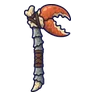

ปูกะโหลกเขา
มอนธาตุอมตะ Lv 18–32
เจอที่
| แมพ | โซน | Lv | ภูมิภาค |
|---|---|---|---|
| หุบซี่โครงยักษ์ | 18–26 | ป่ากองไฟ | |
| หุบซี่โครงยักษ์ | 20–32 | ป่ากองไฟ | |
| หุบซี่โครงยักษ์ | ใต้ซี่โครงยักษ์ | 26–30 | ป่ากองไฟ |
| หุบซี่โครงยักษ์ | ใต้ซี่โครงยักษ์ | 28–32 | ป่ากองไฟ |
ค่าสถานะตามเลเวล
| Lv | HP | ATK | DEF | MDEF | EXP | Job |
|---|---|---|---|---|---|---|
| 18 | 2,502 | 38–57 | 11 | 3 | 30 | 23 |
| 25 | 2,637 | 41–63 | 15 | 5 | 39 | 29 |
| 32 | 4,203 | 54–82 | 19 | 6 | 47 | 35 |
ตีด้วยธาตุไหนดี
แรงขึ้น: ศักดิ์สิทธิ์ ×1.5 ไฟ ×1.25
เบาลง: พิษ ×0 มืด ×0 อมตะ ×0
วัตถุดิบที่ดรอป
| ของ | โอกาส | |
|---|---|---|
| เศษกระดูกเขาสัตว์ | 55% | 1 ชิ้น (15% ได้ 2) |
อุปกรณ์ที่ดรอป (1)
| ของ | โอกาส |
|---|---|
 ขวานก้ามปูกะโหลก | 0.25% |
สกิล
หนามสะท้อน (Lv 25+) · หนามสะท้อน (Lv 60+) · ยิงไกล (Lv 60+)